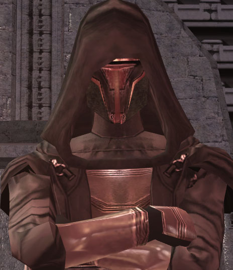

Revan
Main character in game. Depending on players' choices can go either light or dark.
Darth Revan
Dark side version of Revan, with his original lightsaber along with a new red one. This Revan was mind wiped previous to the game, but you can bring him back through your choices
Jedi Knight Revan
Light side version of Revan
Darth Malak
Villain of the video game, Revan's old apprentice. Robot jaw because Revan cut it off.
Bastila Shan (Dark side)
Bastila starts the game good but is turned to the dark side by Darth Malak
Bastila Shan (Light side)
If you choose the light side in the game you are able to turn Bastila back to the light